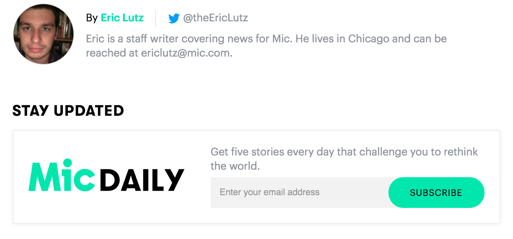

Source: Getty Images
President Donald Trump made his first trip home to New York City on Thursday, but he'll be spending the weekend in New Jersey — and he really wants you to know that he's doing it for you, the American taxpayer.
Instead of causing a "big disruption in NYC," Trump will apparently cause a big disruption in Bedminister, the site of Trump National Golf Club.
Bedminister, in case you don't know, is basically Trump's summer version of Mar-a-Lago. It's where he'll likely spend much of the summer, and he's so fond of the place he has apparently spoken of his desire to be buried near a fairway on his golf course there when he dies. New Jersey governor and Trump's most famous errand boy Chris Christie has said it would be an honor if Trump chose to spend eternity in the Garden State, WNYC reports.
Trump's travel will still presumably cost the country money, despite the bragging in his self-congratulatory tweet. Americans will still have to pay for Trump to be protected — including by the town's 16-member police department.
Trump says he's going there to work — surely he isn't planning on playing golf.
If he does decide to take a break from all the working and hit the links, though, he can expect chilly temperatures with a pocket of rain on Saturday evening.
